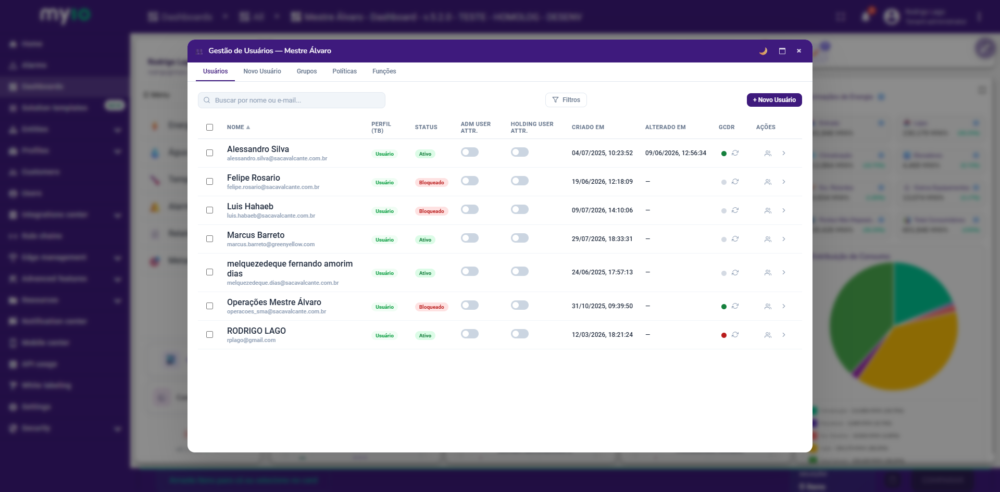
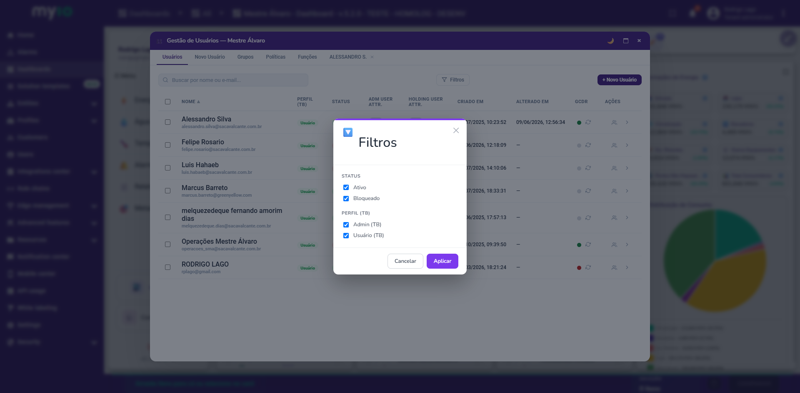
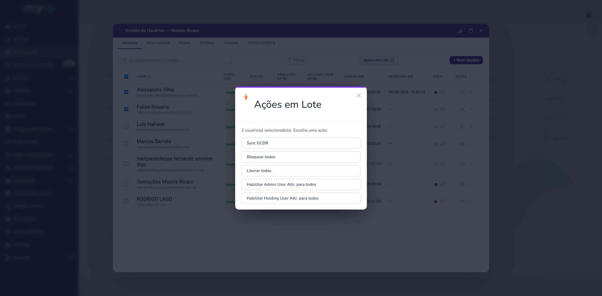
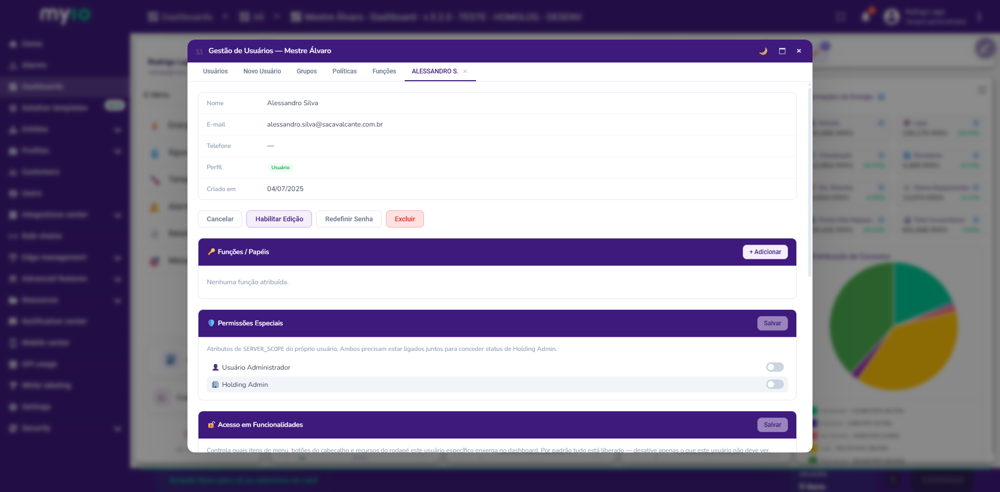
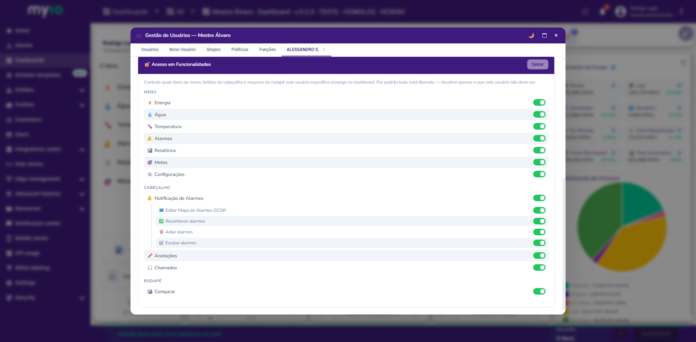

Visão geral
A tela Gestão de Usuários é onde administradores criam, editam e controlam o acesso de cada usuário ao dashboard. Ela reúne:
- A lista de todos os usuários do cliente (customer), com busca, filtros e ações em lote.
- O detalhe de cada usuário, com suas Funções/Papéis, Permissões Especiais e o mapa de Acesso em Funcionalidades.
- Grupos e Políticas de acesso (GCDR).
Como acessar
- No Menu lateral do dashboard, clique em ⚙️ Configurações.
- Na modal que abrir, escolha Gestão de Usuários.
Aba Usuários — a lista
A aba Usuários mostra uma tabela com todos os usuários do cliente:

| Coluna | O que mostra |
|---|---|
| Nome | Nome do usuário, com o e-mail logo abaixo em fonte menor |
| PERFIL (TB) | Admin (Tenant Administrator) ou Usuário |
| Status | Ativo ou Bloqueado — clique no badge para alternar |
| Adm User Attr. | Toggle do atributo isUserAdmin |
| Holding User Attr. | Toggle do atributo isHolding |
| Criado em | Data de criação do usuário |
| Alterado em | Estimativa da última alteração conhecida |
| GCDR | Status de sincronização, com botão para forçar sync |
| Ações | Ver Funções/Papéis, Ver Detalhes |
Buscar, ordenar e filtrar
- Busca: digite nome ou e-mail no campo de busca no topo da lista.
- Ordenar: clique nos cabeçalhos Nome, Criado em ou Alterado em; clique de novo para inverter a direção.
- Filtrar: botão Filtros (funil) — por padrão tudo vem marcado; desmarque o que não quiser ver.

Alterando Adm User Attr. / Holding User Attr. direto na lista
Cada linha tem um toggle para isUserAdmin e outro para isHolding. A mudança pede confirmação antes de ser salva, e mostra um aviso de sucesso ou erro. Se você cancelar, o toggle volta ao valor anterior.
Ações em Lote
Marque uma ou mais linhas para fazer aparecer o botão Ações em Lote:
- Sync GCDR — sincroniza os selecionados com o GCDR.
- Bloquear todos / Liberar todos
- Habilitar Admin User Attr. para todos
- Habilitar Holding User Attr. para todos
Toda ação em lote pede confirmação e mostra um resumo do resultado ao final.

Detalhe do usuário
Clique em Ver Detalhes em qualquer linha para abrir a visão completa:
Dados gerais
Nome, e-mail, telefone, perfil, data de criação e descrição — editáveis via Habilitar Edição. Também é daqui que se Redefine Senha ou Exclui o usuário.
🔑 Funções / Papéis
Funções (roles) do GCDR atribuídas a este usuário, com escopo, status e validade. + Adicionar atribui uma nova; Revogar remove uma existente.
🛡️ Permissões Especiais
Dois toggles que, juntos, concedem status de Holding Admin (acesso entre clientes):
- Usuário Administrador (
isUserAdmin) - Holding Admin (
isHolding)

isUserAdmin de outro nível (do cliente, não do usuário), que controla se o botão Configurações aparece no Menu para quem não é Tenant Administrator. São dois atributos com nomes parecidos, escopos diferentes.
🔓 Acesso em Funcionalidades
Controla o que este usuário enxerga no dashboard — itens de menu, botões do cabeçalho e o dock de comparação do rodapé. Por padrão, tudo está liberado.
| Grupo | Itens |
|---|---|
| Menu | ⚡ Energia · 💧 Água · 🌡️ Temperatura · 🔔 Alarmes · 📊 Relatórios · 🎯 Metas · ⚙️ Configurações |
| Cabeçalho | 🔔 Notificação de Alarmes (4 sub-permissões) · ✏️ Anotações · 🎧 Chamados |
| Rodapé | 📊 Comparar |
Sub-permissões de Alarmes (aparecem recuadas, abaixo do toggle pai "Notificação de Alarmes"):
- 🗺️ Editar Mapa de Alarmes GCDR
- ✅ Reconhecer alarmes
- ⏰ Adiar alarmes
- 📈 Escalar alarmes
Clique em Salvar para gravar. Desligando o toggle pai, os sub-itens ficam desabilitados.

Dúvidas frequentes
Por que o usuário não vê mais o botão Configurações no Menu?
Verifique se menu.settings está desligado em Acesso em Funcionalidades, e se o cliente tem o atributo isUserAdmin (nível cliente) configurado.
Uma mudança em Acesso em Funcionalidades afeta outros usuários?
Não — é sempre por usuário.
Posso restringir um domínio que o dashboard já desabilitou?
Não — restrições de usuário só estreitam, nunca alargam o que o dashboard já permite.